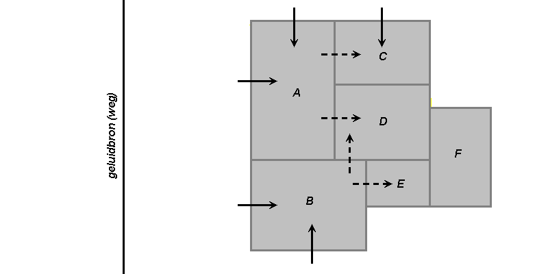

|
Top Previous Next |
|
Indien de uitwendige scheidingsconstructie bestaat uit een gevel of dak met daarachter een loze ruimte en dan nogmaals een scheidingsconstructie dan kan worden gerekend met een gekoppelde ruimte. Een voorbeeldfile KOPPELEN.GL van een slaapkamer met achter het knieschot een bergruimte is opgenomen in de programmafolder.
Indien een vlak aan een andere ruimte wordt gekoppeld, is het niet langer mogelijk om een CL of Cg op te geven. De CL wordt gebruikt om de geluidsbelastingreductie in de berekening van de GA van het vlak mee te nemen. De Cg wordt gebruikt om te corrigeren voor de overgang van het direct naar het diffuse geluidsveld (zie bijlage 4 handleiding).
De ruimte wordt op tab Vlak gekoppeld aan een andere ruimte door middel van de keuzemogelijkheid 'grenst aan'. Alle verblijfsruimten die aanwezig zijn in de betreffende variant kunnen worden geselecteerd. Het is niet mogelijk het vlak aan de verblijfsruimte te koppelen waar het zelf deel van uitmaakt of aan een verblijfsruimte dat niet direct aan de buitenlucht grenst. In de volgende afbeelding wordt dit verduidelijkt.

Ruimte A, B en C worden direct door de geluidsbron (weg) aangestraald en grenzen daarmee aan de buitenlucht (gesloten pijltjes). De ruimte C, D en E zijn op verschillende manieren te koppelen aan de ruimten die direct worden aangestraald (gestreepte pijltjes). Het is nooit mogelijk twee gekoppelde ruimten (in dit voorbeeld D en E) aan elkaar te koppelen. Het is alleen mogelijk twee direct aangestraalde ruimten (bijvoorbeeld ruimte A en C) aan elkaar te koppelen als de te koppelen ruimte (in dit geval C) verder niet aan een andere ruimte is gekoppeld. Tevens is het niet mogelijk om ruimte F te koppelen aan van de overige ruimten.
Als in de plattegrond pijltjes worden getekend is in één oogopslag duidelijk wat wel en wat niet kan. Zodra het geluid meer dan twee wanden moet passeren gaat het mis. Zo kunnen ruimte C en D nooit aan elkaar worden gekoppeld het geluid zou dan bijvoorbeeld via eerst A en vervolgens via C naar D reizen. In de praktijk is dit ook geen maatgevende weg (2x ruimtedemping!!), zodat het verantwoord is om dit te verwaarlozen.
Door in de plattegrond van het gebouw pijltjes (in akoestische termen overdrachtswegen) te tekenen is eenvoudig na te gaan welke ruimten wel en niet gekoppeld hoeven te worden. |